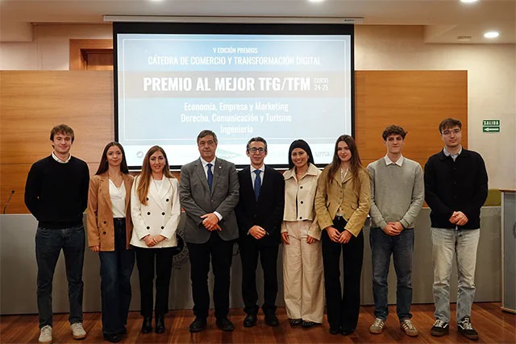
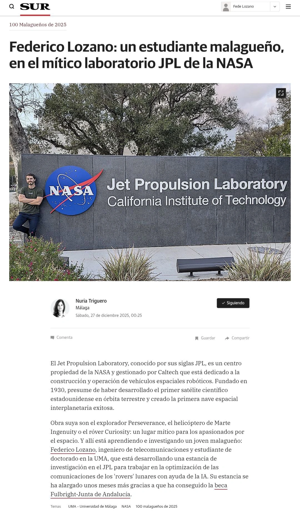
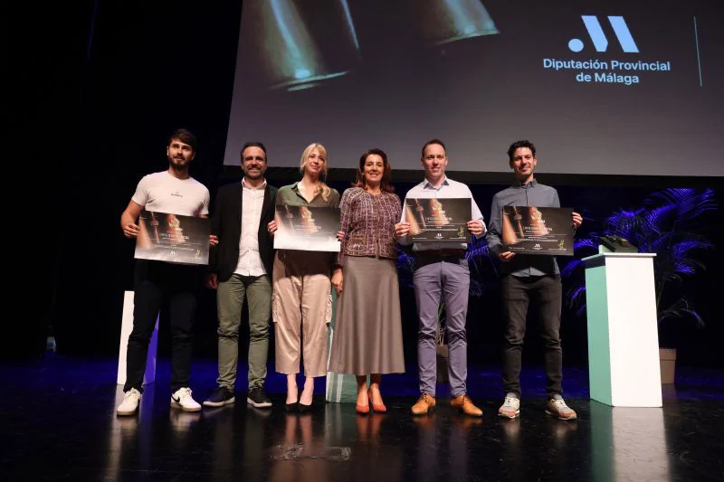
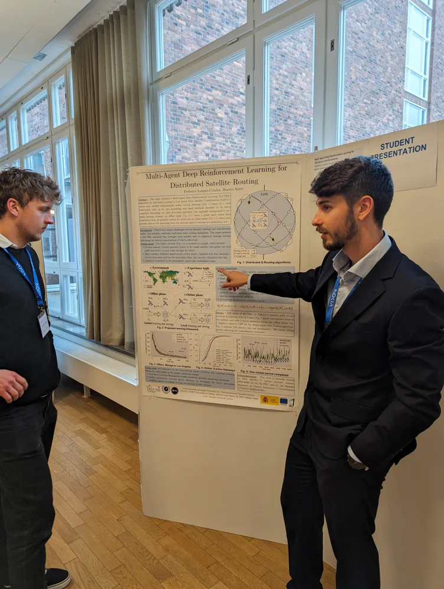
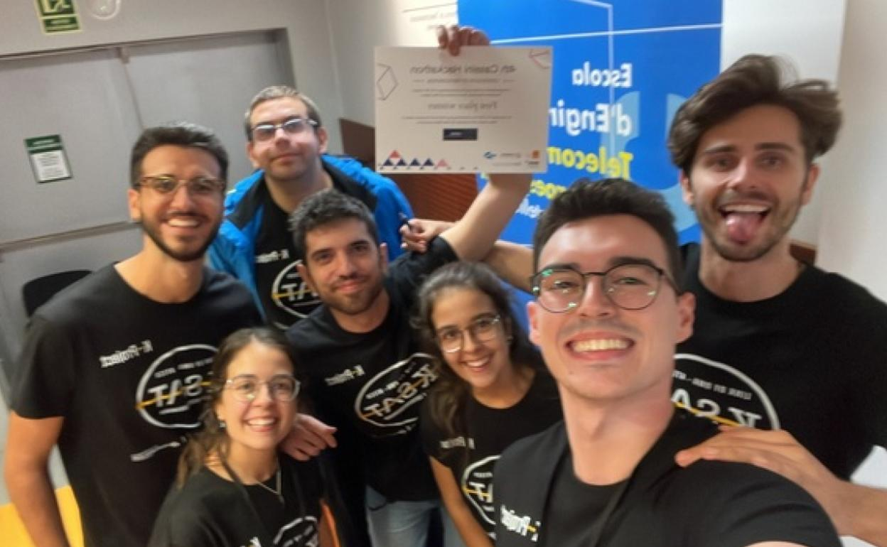
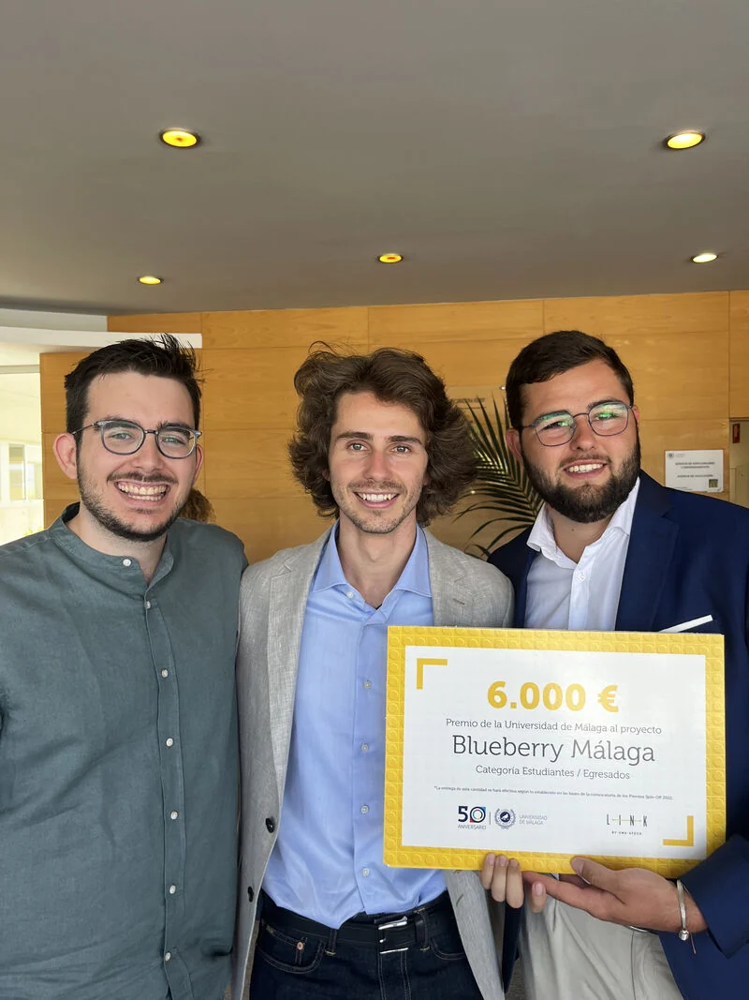

Sept. 20
HackSpain · HappyRobot track winner
Our wildfire response project won the HappyRobot challenge in Madrid.
Sept. 20
Our wildfire response project won the HappyRobot challenge in Madrid.

Feb. 9
The University of Málaga recognized my master’s thesis on machine learning for satellite routing with a €250 accésit. I joined the ceremony remotely from my research stay at JPL.

Published Dec. 27
Diario SUR recognition for contributions to science and innovation (Malaga, Spain).

Announced Apr. 12
Awarded to conduct a 6-month Ph.D. research stay at NASA Jet Propulsion Laboratory and Johns Hopkins University; funding valued at EUR 60,000 (California and Maryland, USA).

Mar
Awarded to conduct an international research visit abroad; fellowship value USD 5,100; selected among 120 students from 9 European universities (California, USA).

Nov. 20
Blueberry Malaga was a finalist at the fifth La Noria awards. The Diputación de Málaga recognized the finalists at the Edgar Neville Auditorium in Málaga.

May
Travel grant of EUR 650 for the IEEE ICMLCN 2024 conference (Stockholm, Sweden).

Oct
I was one of 16 researchers selected by the University of Málaga for a four-year doctoral contract, with €111,758 in public funding.

Nov. 4–6
Our FarmSat team won €1,000 in the Spanish competition, Entrepreneurship in Space, in Castelldefels, Barcelona. I presented our pitch in the online European final.

July 20
Blueberry Malaga received €6,000 in the student and graduate category at the XXVI Spin-Off Awards, held at the Rayo Verde building in Málaga. The award also gave us access to entrepreneurship programs including Polaris.
Mar.–Sep. 2023
Master’s thesis stay at DLR in Munich.
Feb.–Jul. 2021
Semester at Seoul National University of Science and Technology.
Sep. 2018–Jun. 2019
Academic year at the Politehnica University of Bucharest.